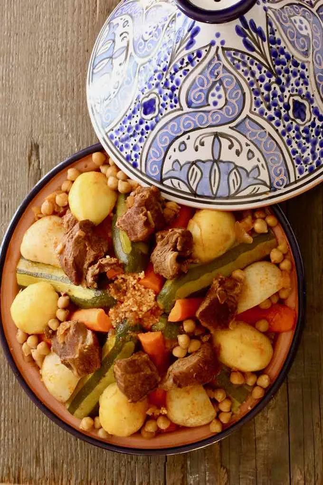

Tunisian Couscous

Description
Couscous is a staple in most Maghreb cuisines. It is known as the national dish in Tunisia, but also in Algeria and Morocco, as well as Mauritania and Libya. Tunisian couscous is one of the countless variations of this delicious and versatile dish.
Ingredients
- 2 lb lamb stew meat , cut into large pieces
- 6 cups couscous fine semolina (or medium)
- 2 onions , finely chopped
- 2 cloves garlic , pressed
- 4 tablespoons tomato paste
- 2 tablespoons harissa
- 2 tablespoons ground caraway
- 1 tablespoon ground coriander
- 1 teaspoon chili powder
- 4 turnips , cut in half
-
6 medium carrots , peeled
- 4 zucchini , peeled lengthwise, alternately leaving a layer of skin
- 6 small potatoes , peeled
- 10 oz. chickpeas (canned)
- 4 green hot peppers , fried in oil (optional)
- Vegetable oil
- Salt
- pepper
Steps
- Preheat the oven to 400 degrees F (200 degrees C). Line a baking sheet with aluminum foil.
- Mix butter, olive oil, minced garlic, garlic powder, parsley, and salt in a bowl until well combined.
- Cut bread loaf into 1-inch slices and spread garlic mixture over each slice. Place each on a baking sheet. Wrap with additional aluminum foil.
- Bake in the preheated oven until bread is crispy and heated through, 25 to 30 minutes.